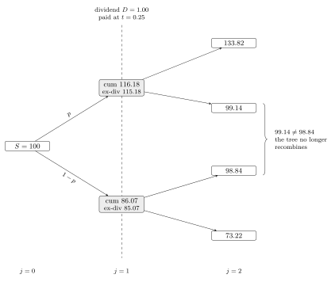
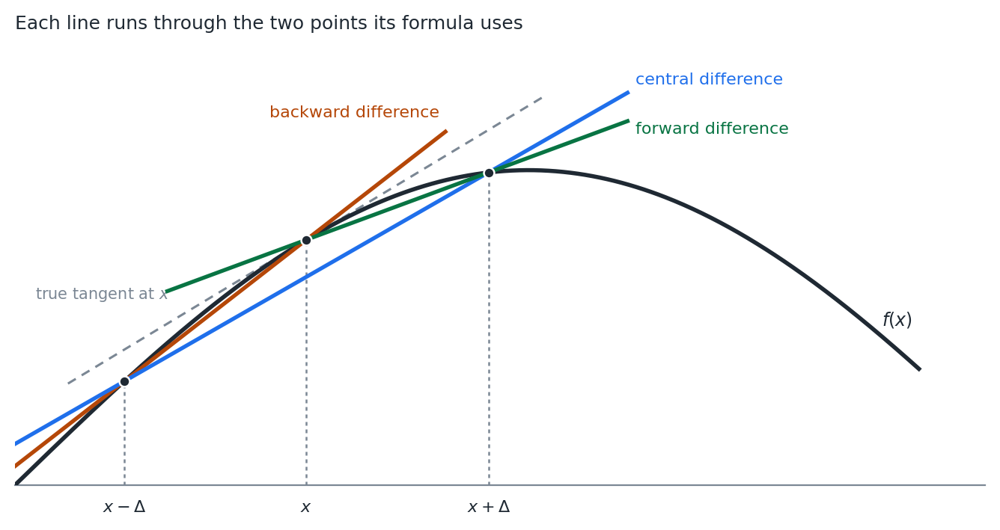
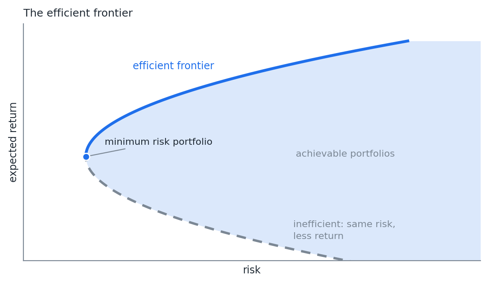
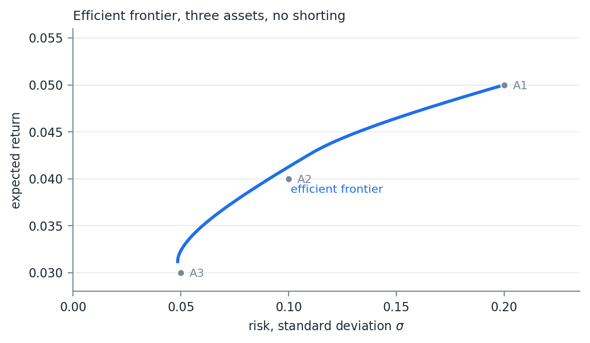
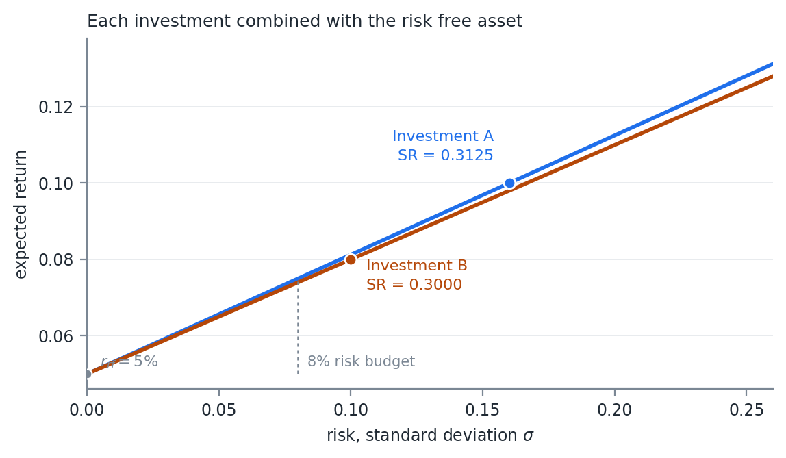
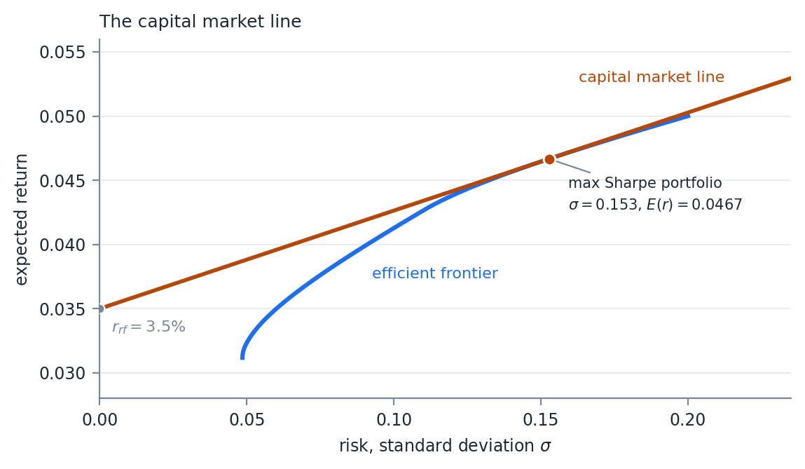

FinTech 545 — Week 07
Week 06 priced a European option three ways: the integral, the closed form, and the tree.
The tree was the only one that could be walked backwards. That is what the American case needs.
The second half of the week leaves options behind and builds portfolios.
An American option can be exercised at any time up to maturity.
That is more choice than the European holder has, and all options have value:
Value_{American} \geq Value_{European}
The question is when the extra choice is worth anything.
Exercising early gives up whatever option value remains and takes the payoff instead.
For a call on a non-dividend paying stock, Week 06 showed the European value is always above the payoff:
Call\ Value_{American,t} \geq Call\ Value_{European,t} > \pi_t \ \ \ \forall\ t > 0
Selling the option always beats exercising it.
The early exercise right on that call is never used, so it is worth nothing.
An American call on a non-dividend paying stock is priced as the European call.
If the underlying pays something, exercising may be worth it to own the stock and collect the payment.
When the cash flow plus the payoff exceeds the value of the option, exercise early.
That is the discrete dividend section.
Week 06 ended with a deep in the money European put sitting below its payoff.
The strike arrives only at maturity, so it is discounted. The gap is the interest on the strike.
An American put cannot trade there:
Put\ Value_{American,t} \geq \pi_t \ \ \ \forall\ t
If it did, buy the put and exercise it immediately. Pay less than X - S, receive exactly X - S, with no risk and no waiting.
Anyone can do that, so the price never gets there.
The European put is free to sink below its payoff, and does.
The American put is held up at the payoff by arbitrage.
The difference between the two is what the early exercise right is worth.
Early exercise of an American put can be optimal with no dividend at all.
The exercise decision is a critical stock price S^*.
Below S^*, exercise. Above it, hold.
X=100, r=8\%, \sigma=30\%, with 0.25 years remaining: S^* is a little under 82.
The boundary is not known in advance. It comes out of the same backward induction that produces the price.
It moves as the time remaining shrinks.
Those two together are why the European put has a formula and the American put does not.
Modify the European tree from Week 06:
American and Bermuda options are both typically valued this way.
At node i of step j:
P_{i,j} = \max\left( \pi\left( S u^{i} d^{(j-i)} \right),\ e^{-r\Delta t}\left[ p P_{i+1,j+1} + (1-p) P_{i,j+1} \right] \right)
The first term is exercising. The second is the discounted, risk neutral value of holding one more step.
The European formula summed over terminal nodes only.
The change is the \max.
A sum can be evaluated. A sequence of \max operations has to be walked.
That is the whole reason the European case has a closed form and this one does not.
American put, N=2, T=0.5, S=100, X=100, r=b=0.08, \sigma=0.3.
u = e^{0.3\sqrt{0.25}} = 1.1618, \qquad d = e^{-0.3\sqrt{0.25}} = 0.8607, \qquad p = 0.5297
American put, 2 step tree. The down node at j=1 is exercised early.
At maturity the value is the payoff. Only the bottom node, S = 74.08, is worth anything: 25.9182.
At (j=1, i=0), S = 86.07:
\pi = 13.9292, \qquad e^{-0.08 \cdot 0.25}\left( 0.4703 \cdot 25.9182 \right) = 11.9491
Exercise is worth more. The node takes 13.9292.
At the root:
e^{-0.08 \cdot 0.25}\left( 0.4703 \cdot 13.9292 \right) = 6.4218
The early exercise happened at exactly one place in the tree.
It changed the root value because the larger number propagated backwards.
Everything else in the tree is the European calculation.
The exercised node sits at S = 86.07, above the true boundary.
A converged model would not exercise there.
The coarse tree gets the right qualitative answer for the wrong reason.
| 2 step tree | Converged | |
|---|---|---|
| European put | 5.5088 | 6.4670 |
| American put | 6.4218 | 6.8662 |
| Early exercise premium | 0.91 | 0.40 |
The 2 step tree more than doubles the premium.
An index is a basket of stocks paying dividends at different times.
They accrue to the index slowly, and the continuous dividend rate from Week 06, b = r - q, describes that well.
A single stock pays a set amount on a set date, not a rate.
When the dividend is paid, the share price drops by the amount of the dividend.
That is a discontinuity in the price path.
Week 06’s tree recombined because ud = 1. Up then down returned exactly to the starting price.
Subtracting a fixed dollar amount at one date breaks that.
The same dollar is a different percentage at every node.
American call, N=2, T=0.5, S=100, X=100, r=b=0.08, \sigma=0.3.
A dividend of $1.00 at t=0.25.
u = 1.1618, \qquad d = 0.8607, \qquad p = 0.5297
Same parameters as the put, so the tree before the dividend is the same tree.

A discrete dividend breaks recombination: each j=1 node spawns its own subtree.
A dividend paid at j = n creates n+1 new trees, one from each node at that step.
Each new tree starts from the node’s price less the dividend.
A call exercised at j = n gets the stock and the dividend with it.
A put exercised at j = n forgoes the price drop the dividend would have brought.
Either way the exercise payoff is \pi\left( S_n + D_n \right), the payoff as if the dividend had not happened.
After the dividend date the node count grows like 2^N again.
A tree with several dividends and a realistic number of steps becomes expensive quickly.
In practice, only calls are exercised early to receive the dividend.
Hull, Chapter 15, shows exercise is optimal when
D_n > X\left( 1 - e^{-r\left( T - t_n \right)} \right)
t_n is the time dividend D_n is paid.
The right hand side is the interest earned on the strike between the dividend date and maturity.
Exercising early hands over the strike sooner.
The dividend has to be worth more than the interest given up.
D_n = 1.00, X = 100, r = 8\%, T - t_n = 0.25:
X\left( 1 - e^{-0.08 \cdot 0.25} \right) = 1.98
1.00 < 1.98. The dividend is too small to justify early exercise.
The example shows what a dividend does to the shape of the tree. Raise it above $1.98 and the call is exercised at t_n.
An exercise in recursion, and it handles any number of dividends.
There are many ways to handle discrete cash flows.
A tree that is allowed to stop recombining is the most generic. The same structure applies to any problem with a fixed cash flow on a fixed date.
The Greeks are the partial derivatives of the pricing function with respect to its inputs.
They approximate the change in option value for a change in an input.
The underlying price and the implied volatility move, and that movement is the risk in holding the option. Knowing the approximate change is what makes hedging possible.
Delta Normal VaR needed the first derivative of every position with respect to every underlying price.
For an option, that derivative is delta.
The gradient from Week 04 was waiting for this.
| Greek | Definition | Call | Put |
|---|---|---|---|
| Delta, \Delta | \frac{\partial P}{\partial S} | e^{(b-r)T}\Phi(d_1) | e^{(b-r)T}\left( \Phi(d_1) - 1 \right) |
| Gamma, \Gamma | \frac{\partial^2 P}{\partial S^2} | \frac{f(d_1) e^{(b-r)T}}{S\sigma\sqrt{T}} | same as call |
| Vega | \frac{\partial P}{\partial \sigma} | S e^{(b-r)T} f(d_1)\sqrt{T} | same as call |
| Rho, \rho | \frac{\partial P}{\partial r} | T X e^{-rT}\Phi(d_2) | -T X e^{-rT}\Phi(-d_2) |
| Carry Rho | \frac{\partial P}{\partial b} | T S e^{(b-r)T}\Phi(d_1) | -T S e^{(b-r)T}\Phi(-d_1) |
From the generalized BSM. f is the normal PDF and \Phi the normal CDF. Gamma is also called convexity. Rho is shown for Black Scholes, where r = b.
The derivative with respect to time to maturity, -\frac{\partial P}{\partial T}.
Negative, but often quoted as a positive number. Also called theta decay.
\begin{aligned} \Theta_{call} &= -\frac{S e^{(b-r)T} f(d_1) \sigma}{2\sqrt{T}} - (b-r) S e^{(b-r)T}\Phi(d_1) \\ &\qquad - r X e^{-rT}\Phi(d_2) \\[10pt] \Theta_{put} &= -\frac{S e^{(b-r)T} f(d_1) \sigma}{2\sqrt{T}} + (b-r) S e^{(b-r)T}\Phi(-d_1) \\ &\qquad + r X e^{-rT}\Phi(-d_2) \end{aligned}
Gamma and vega are identical for a call and a put at the same strike.
Put call parity forces it. The difference between the two is
C - P = S - Xe^{-rT}
Linear in S, so no second derivative. No \sigma in it at all, so no vega.
Every formula carries f(d_1) or \Phi(d_1).
A single evaluation of the pricing function produces all of them.
Week 06 said the kink at the strike is where the payoff stops being linear.
Gamma is that curvature, measured.
Delta Normal VaR keeps the first derivative and throws gamma away. On a book of options, that is the term that matters.
A market maker sells 100 calls that expire in 15 trading days, for $2.50 each.
Stock at $100.50, strike $100, risk free rate 25bp, no dividend.
Priced with the GBSM.
The hedge removes the first order exposure and leaves the second order exposure.
A short call is short gamma. The delta hedged book loses on a large move in either direction.
Its VaR does not go to zero, however precisely the delta is matched.
Compare the two answers. Do not just report the second one.
Not every valuation method has closed form derivatives.
An American option priced on a tree is the obvious case. There is no formula to differentiate.
The simplest numerical method is a finite difference. Automatic differentiation may be available, and faster or more accurate.
f'(x) \approx \frac{f(x+\Delta) - f(x-\Delta)}{2\Delta}
Close enough for a small enough \Delta, assuming a smooth surface.
Two evaluations of the function. For some valuation methods, that is a real computing cost.
f'(x) \approx \frac{f(x+\Delta) - f(x)}{\Delta}
f(x) is the current value, already computed. One more evaluation.
Cheaper, and less accurate. A backward difference is the same trade.

Forward, backward, and central difference approximations
The forward and backward secants both sit visibly off the tangent.
They miss in opposite directions.
The central difference averages the two, and the leading error term cancels.
Worth the extra evaluation.
The first derivative of the first derivative:
\begin{aligned} f''(x) &\approx \frac{\frac{f(x+\Delta) - f(x)}{\Delta} - \frac{f(x) - f(x-\Delta)}{\Delta}}{\Delta} \\[10pt] &= \frac{f(x+\Delta) + f(x-\Delta) - 2f(x)}{\Delta^2} \end{aligned}
Too large and the approximation error dominates.
Too small and the numerator subtracts two nearly equal floating point numbers, then divides by something small.
The second derivative divides by \Delta^2. It is far more sensitive to the choice than the first.
Portfolio construction balances expected return against expected risk.
Higher expected returns generally require taking higher risks.
Every combination of the available assets gives a pair, an expected return and a risk.
Plot all of them and they fill a region.

The efficient frontier
The efficient frontier is the left edge of the region, above the minimum risk point.
The maximum return achievable for a given level of risk.
Equivalently, and this matters shortly, the minimum risk for a given level of return.
For any portfolio inside the region there is one directly above it on the frontier, with the same risk and more return.
The dashed lower branch is the extreme case. Same risk as the solid branch, less return.
The minimum risk portfolio is where the two branches meet.
Harry Markowitz, Nobel Prize in Economics, 1990.
Assume multivariate normality. Risk is portfolio variance.
\max\ U(w) = w\mu^T - \frac{1}{2}\lambda\, w\Sigma w^T \qquad s.t.\ \sum_{1}^{n} w_i = 1
w the weights, \mu the expected returns, \Sigma the covariance, \lambda risk aversion.
w\Sigma w^T is fact 7 from Week 02 again.
The whole optimization is that one quadratic form, traded against a linear term.
Solve it for different \lambda and each solution is a point on the frontier.
Nobody has a quadratic utility function.
Asking someone for their \lambda is nonsensical.
Invert the graph. The maximum return for a given risk is the minimum risk for a given return.
\min\ \sigma^2 = w\Sigma w^T \qquad s.t.\ \sum_{1}^{n} w_i = 1, \quad w\mu^T = R
Still a quadratic problem, and easily solved.
Often we disallow shorting, meaning negative weights, or limit how much can be short.
Those bounds are additional linear constraints. The problem stays a quadratic program.
Both forms trace the same frontier.
The first sweeps it by varying \lambda. The second by varying R.
Implement the second. R is a number an investor can actually state.
No negative weights.
| A1 | A2 | A3 | |
|---|---|---|---|
| A1 | 1 | 0.5 | 0 |
| A2 | 0.5 | 1 | 0.5 |
| A3 | 0 | 0.5 | 1 |
| Std dev | 0.20 | 0.10 | 0.05 |
| E(r) | 0.05 | 0.04 | 0.03 |
Solve the minimum variance problem once for each R between the lowest and highest achievable return.
Each solve returns a weight vector. Each weight vector is one point on the curve.

Efficient frontier for the 3 asset example, no shorting
A1 is on the frontier. It is the only way to reach the highest return.
A3 is on it too, close to the lowest risk available.
A2 sits inside. A mix of A1 and A3 beats holding A2 alone.
That is diversification, and it comes entirely from the zero correlation between A1 and A3.
William Sharpe and others, mid 1960s. The papers that led to CAPM.
Sharpe shared the 1990 Nobel Prize with Markowitz and Merton Miller.
SR = \frac{E\left( r_p \right) - r_{rf}}{\sigma_p}
Expected return in excess of the risk free rate, in units of risk.
Choose A or B, not both. Borrow and lend at the risk free rate of 5%.
| E(r) | \sigma | SR | |
|---|---|---|---|
| A | 10% | 16% | 0.3125 |
| B | 8% | 10% | 0.3000 |
The investor wants 8% risk.
A. 50% in A, 50% in the risk free asset:
E(r) = 7.5\%, \qquad Risk = \sqrt{0.5^2 \cdot 0.16^2} = 8\%, \qquad SR = 0.3125
B. 80% in B, 20% in the risk free asset:
E(r) = 7.4\%, \qquad Risk = \sqrt{0.8^2 \cdot 0.10^2} = 8\%, \qquad SR = 0.3000
Same risk, more return.
Each mix kept the Sharpe Ratio of the investment it was built from.
Borrow 50% at the risk free rate and buy more A:
E(r) = 150\% \cdot 10\% + (-50\%) \cdot 5\% = 12.5\%
Risk = \sqrt{1.5^2 \cdot 0.16^2} = 24\%, \qquad SR = \frac{12.5 - 5}{24} = 0.3125
The Sharpe Ratio survives leverage too.

Return against risk for each investment combined with the risk free asset
The risk free asset, at \sigma = 0 and \mu = r_{rf}. The line starts there.
The investment itself, at \left( \sigma_p, E(r_p) \right).
\text{slope} = \frac{E\left( r_p \right) - r_{rf}}{\sigma_p - 0} = SR
Not an analogy. The definition of the ratio and the rise over run of the line are the same expression.
Every mix of the investment and cash lands on the line, so the ratio holds at every level of risk.
A steeper line through the same intercept is above a shallower one everywhere to the right. A beats B at every risk budget, not just 8%.
Two of the risk measure properties from Week 05.
Positive homogeneity. q(\lambda X) = \lambda\, q(X). Holding a fraction w of the investment scales its risk by exactly w.
Translation. Adding a certain amount does not change dispersion. The cash leg contributes nothing to \sigma.
w in the investment and 1-w in cash:
\sigma\left( w\, r_p + (1-w) r_{rf} \right) = w\, \sigma_p
E\left( w\, r_p + (1-w) r_{rf} \right) = r_{rf} + w\left( E(r_p) - r_{rf} \right)
Both linear in the same w. That is a straight line, and the ratio of the two slopes is the Sharpe Ratio.
Standard deviation is subadditive, positively homogeneous, and satisfies the translation property.
It is not monotone. A portfolio that loses more in every state can still have the lower standard deviation.
So it is a deviation measure, not a coherent risk measure in Artzner’s sense. The two properties used here are ones it has.
Variance is not positively homogeneous:
\operatorname{var}(wX) = w^2 \operatorname{var}(X)
Plot the same picture against variance and every one of these lines becomes a curve.
That is why the axis is \sigma.
If the slope is what we want, and we are choosing among every portfolio on an efficient frontier rather than between two investments:
Which point on the frontier gives the steepest line out of r_{rf}?

The capital market line, tangent at the maximum Sharpe Ratio portfolio
The capital market line, CML, is tangent to the efficient frontier at the maximum Sharpe Ratio portfolio.
Also called the super efficient portfolio, or the market portfolio.
Mixing it with cash gives a return at least as high as the frontier at every level of risk.
At a 3.5% risk free rate:
| Value | |
|---|---|
| Weights | \tfrac{2}{3} A1, \tfrac{1}{3} A2, 0 A3 |
| \sigma | 0.153 |
| E(r) | 4.67% |
| SR | 0.0764 |
A3 drops out entirely, despite being the lowest risk asset available.
The CML is a straight line in (\sigma, \mu) space.
In (\sigma^2, \mu) space it is a square root curve.
The tangency argument only reads correctly against \sigma.
Combine CAPM with the Efficient Market Hypothesis.
The market portfolio is every asset, weighted by its current market capitalization.
Most investors cannot borrow at the risk free rate.
The CML above the market portfolio is unobtainable. Borrowing at a higher rate flattens the line past that point.
Or the investor simply invests along the efficient frontier.
Rational investors hold only the market portfolio and the risk free asset. One source of systematic risk.
r_s - r_{rf} = \alpha + \beta\left( r_{mkt} - r_{rf} \right) + \epsilon_s
Excess return on the asset is alpha, plus beta times the excess return on the market, plus idiosyncratic error.
In the long run, theory says \alpha = 0.
That equation is OLS, and everything in Week 02 applies.
\beta is a scaled covariance, with the usual standard error.
\alpha is an intercept. Its t-statistic is what anyone claiming skill has to clear.
Financial assets as a linear function of several sources of risk and return.
E\left( r_s - r_{rf} \right) = \alpha_s + \sum_{i=1}^{n} \beta_i E\left( f_i \right), \qquad E\left( f_i \right) = RP_i
Each factor is a systematic risk, and each contributes to expected return.
RP_i is the factor’s risk premium.
The expected return in excess of the risk free rate for taking on that factor’s risk.
r_s - r_{rf} = \alpha + \beta\left( r_{mkt} - r_{rf} \right) + \epsilon_s
An APT model with a single factor, the market.
Investors who cannot borrow at the risk free rate reach for return above the market portfolio.
That is a leading explanation for why some kinds of stocks beat CAPM and EMH over long periods.
Value stocks and low beta stocks both show long term positive alpha.
APT says nothing about what the factors are.
It says only that if returns have a linear factor structure, no arbitrage forces expected returns into that form.
Choosing the factors is a separate problem. It is Week 09.
Eugene Fama, Nobel Prize 2013, and Kenneth French. 1993.
Testing CAPM turned up anomalies. Stocks with a low price to book and stocks with a small market cap outperformed.
They added factors for value and size.
They did not try to say why the anomalies exist. Only to model the return.
Each factor is a long short portfolio.
HML. High minus low book to price. Long value, short expensive.
SMB. Small minus big. Long small, short large.
\begin{aligned} r_s - r_{rf} = \alpha &+ \beta_{mkt}\left( r_{mkt} - r_{rf} \right) \\ &+ \beta_{SMB}SMB + \beta_{HML}HML + \epsilon_s \end{aligned}
Mark Carhart, 1997, adds momentum. Assets that have done well recently tend to keep doing well.
Week 02 gave the process. An autoregressive term with \beta > 0 makes a positive move more likely to be followed by another.
UMD. Up minus down. Long high momentum, short low momentum.
\begin{aligned} r_s - r_{rf} = \alpha &+ \beta_{mkt}\left( r_{mkt} - r_{rf} \right) + \beta_{SMB}SMB \\ &+ \beta_{HML}HML + \beta_{UMD}UMD + \epsilon_s \end{aligned}
Academics have debated these and searched for new ones for decades.
Most agree size is no longer a priced factor.
Fama and French split HML into two: profitable companies, RMW, and companies that invest in their business, CMA.
A lot of a modern company’s value does not show up in accounting book value.
Value has significantly underperformed for 10 years or more. Some ask whether it is a factor at all.
Others try to revive it by moving away from book value.
RMW and CMA were early attempts at quality.
Some consider quality a priced factor.
Like value, there is no good single definition of it.
Every model here takes the factors as given and estimates the betas.
Week 08 uses them to attribute realized risk and return.
Week 09 builds the factors.